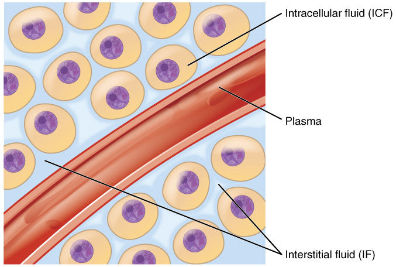
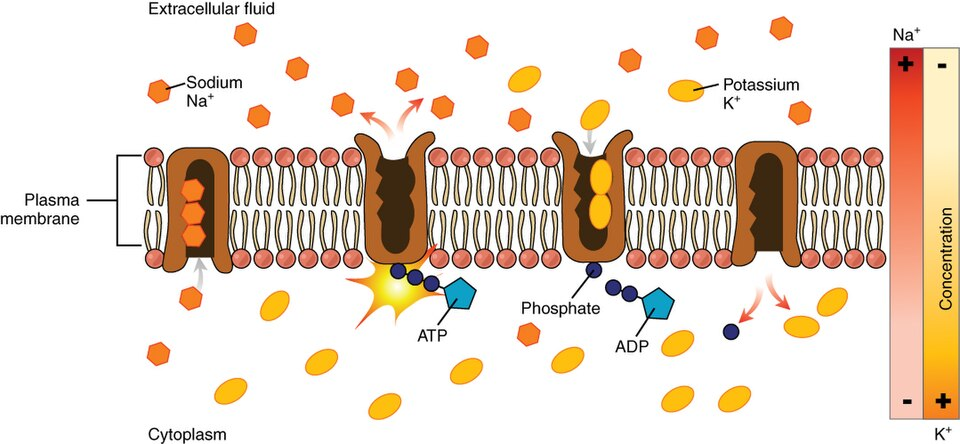
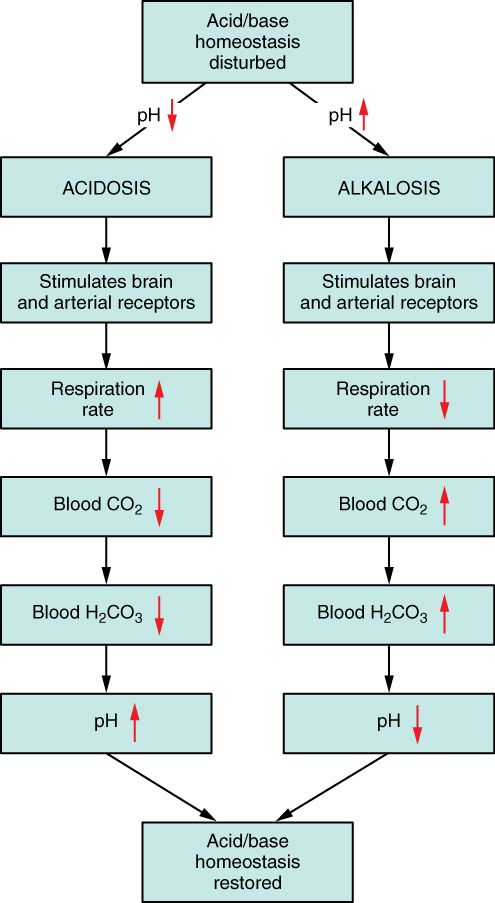
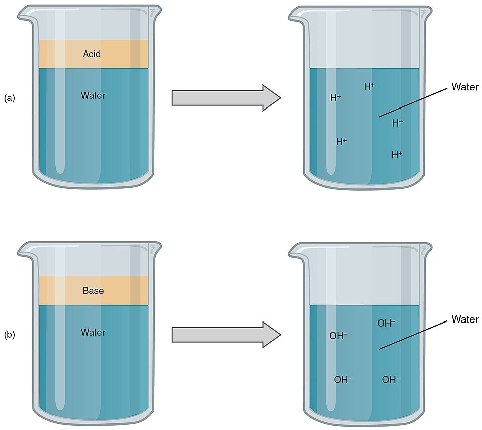

Fluid, Electrolyte & Acid-Base Balance
You are, quite literally, mostly water — and the story of staying alive is largely the story of keeping that water, the salts dissolved in it, and its acidity all pinned inside astonishingly narrow ranges. This chapter follows the fluid from the compartments where it lives, through the daily balance of what comes in and what goes out, to the charged electrolytes that ride within it and the delicate pH that every enzyme depends on. You will meet the buffers that catch stray acid in an instant, the lungs and kidneys that finish the job over minutes and days, and the four classic acid-base disorders that appear when the whole system slips. By the end you will be able to read a set of blood numbers and say, plainly, what has gone wrong and how the body is fighting back.
By the end of this chapter you can
- Name the body's fluid compartments, estimate the fraction of water in each, and describe how their ionic composition differs.
- Balance a day's water intake against output and identify the routes of each, including insensible loss.
- Explain how thirst and antidiuretic hormone keep total body water steady.
- List the major electrolytes, state where each is concentrated, what it does, and which hormone controls it.
- Write the bicarbonate buffer equation and explain how a buffer resists a change in pH.
- Rank the body's three lines of acid-base defense by speed and describe the mechanism of each.
- Classify the four acid-base disorders by cause and direction, and predict the compensation for each.
- Interpret a simple set of blood-gas values to name an acid-base disturbance.
Section 1The fluid compartments

How much of you is water
In a healthy adult, roughly 60% of body mass is water — call it about 42 liters in a 70-kilogram person. That number is not fixed. It runs higher in infants (near 75%) and lower in older adults, and because fat tissue holds almost no water, a leaner body is a wetter one and women, who carry proportionally more adipose tissue on average, sit a few points lower than men. This total body water is not one puddle. It is parceled into compartments separated by living membranes, and the whole subject of fluid balance is really about how water and solutes move between those compartments.
Two great pools, and a smaller subdivision
The first and largest division is by the cell membrane. About two-thirds of your water sits inside your cells — the intracellular fluid, or ICF. The remaining one-third lies outside the cells — the extracellular fluid, or ECF. The ECF is then split again by the walls of the blood vessels: most of it bathes the tissues directly as interstitial fluid (the water in the gaps between cells), and a smaller share is the plasma traveling inside the vessels. A tiny extra fraction, the transcellular fluid, includes specialized pools like cerebrospinal fluid, joint fluid, and the aqueous humor of the eye.
| Compartment | Share of total body water | Where it is |
|---|---|---|
| Intracellular (ICF) | ~2/3 (about 40% of body weight) | Inside all the cells |
| Extracellular (ECF) | ~1/3 (about 20% of body weight) | Outside the cells — split below |
| · Interstitial | ~3/4 of the ECF | In the spaces between cells |
| · Plasma | ~1/4 of the ECF | The fluid part of blood, inside vessels |
| Transcellular | A small extra pool | CSF, joint, eye, GI secretions |
Same water, very different salt
What makes the compartments distinct is not the water but the solutes dissolved in it. The ICF and ECF have strikingly different ionic recipes, kept apart by the cell membrane and its pumps. The ECF is a salty sea, dominated by sodium (Na⁺) and chloride (Cl⁻), much like seawater. The ICF, by contrast, is rich in potassium (K⁺), magnesium, phosphate, and negatively charged proteins. The sodium-potassium pump in every cell membrane works around the clock to hold this difference — pushing Na⁺ out and pulling K⁺ in — and that stored gradient is what powers nerve impulses, muscle contraction, and much of the traffic across membranes.
Because water follows solute by osmosis, the amount of dissolved particle in each compartment (its osmolarity) sets where the water goes. Add salt to the ECF and it becomes concentrated, pulling water out of the cells so they shrink; dilute the ECF and water rushes in, swelling the cells. This is why sodium, the most abundant ECF particle, is the single biggest lever on fluid movement in the body.
Tap each compartment in the interactive below to see where the water lives.
- Water is about 60% of body mass; leaner bodies and infants hold more, older adults less.
- Two-thirds of body water is intracellular; one-third is extracellular, and the ECF splits into interstitial fluid and plasma.
- ECF is high in Na⁺/Cl⁻; ICF is high in K⁺ and proteins — a difference held by the sodium-potassium pump.
- Water follows solute by osmosis, so ECF sodium is the main control on where fluid moves.
Section 2Water in, water out

A ledger that must balance
Total body water stays remarkably steady from day to day, and the reason is simple bookkeeping: over any 24 hours, water in must equal water out. A typical adult moves about 2.5 liters across that ledger each day. On the intake side, most comes from what you drink (roughly 1.5 L), a good deal from the water hidden in food (about 0.7 L — fruit, vegetables, and even bread are surprisingly wet), and a small but real amount is manufactured inside you. Every time a cell burns glucose or fat for energy, water is a by-product of that reaction; this metabolic water adds roughly a quarter-liter a day without your drinking a drop.
The four ways out
Water leaves by four routes, and only one of them is something you can adjust at will. The kidneys make urine (about 1.5 L, the single largest and the only closely regulated output). The rest is insensible loss — water you shed without noticing: it evaporates continuously from your skin and leaves as vapor in every breath from your lungs (together close to 0.9 L). A modest amount leaves in the feces, and more pours out as sweat when you are hot or working hard. Fever, heat, exercise, vomiting, and diarrhea can all send these losses soaring, which is why they so quickly threaten balance.
| Direction | Route | Rough daily amount |
|---|---|---|
| In | Fluids you drink | ~1.5 L |
| In | Water in food | ~0.7 L |
| In | Metabolic water (from metabolism) | ~0.3 L |
| Out | Urine (regulated) | ~1.5 L |
| Out | Skin & lungs (insensible) | ~0.9 L |
| Out | Feces | ~0.1 L |
Thirst and the water-saving hormone
Because intake is behavioral and output is largely obligatory, the body regulates both ends. When you lose water, the ECF grows concentrated and its osmolarity rises. Tiny osmoreceptors in the hypothalamus detect this and do two things. First they trigger thirst, driving you to drink and raise intake. Second, they signal the posterior pituitary to release antidiuretic hormone (ADH), also called vasopressin. ADH travels to the kidney and tells the collecting ducts to install water channels (aquaporins) that reabsorb water back into the blood, producing a small volume of concentrated urine. Drink too much, and the reverse happens: osmolarity falls, ADH switches off, and the kidney lets a large volume of dilute urine flow. Between the pull of thirst and the throttle of ADH, total body water is held within about a percent from one day to the next.
Tap each route in the interactive to see how the body keeps water in and out equal.
- Over a day, intake ≈ output ≈ 2.5 L; intake is drink + food + metabolic water.
- Output is urine (the only tightly regulated route) plus insensible loss from skin and lungs, feces, and sweat.
- Thirst raises intake; ADH (vasopressin) lowers output by making the kidney reabsorb water.
- A minimum obligatory urine volume must always be excreted to clear metabolic waste.
Section 3The electrolytes

Charged particles that do the work
An electrolyte is any substance that breaks apart into charged ions when it dissolves, allowing the fluid to carry an electric current. They are the reason body fluids conduct at all, and they do far more than sit in solution: electrolyte gradients drive every nerve impulse, every muscle contraction, and every shift of water between compartments. Because these jobs are so sensitive, the body regulates electrolyte levels tightly and measures them in milliequivalents per liter (mEq/L), a unit that counts electrical charge rather than plain mass. Positively charged ions are cations (Na⁺, K⁺, Ca²⁺, Mg²⁺); negatively charged ones are anions (Cl⁻, bicarbonate, phosphate).
The big four cations
Sodium (Na⁺) is the chief cation of the ECF and the master of fluid volume — where sodium goes, water follows. Its level (normally 135–145 mEq/L) is guarded chiefly by aldosterone, an adrenal hormone that tells the kidney to reabsorb sodium. Potassium (K⁺) is the chief cation of the ICF and sets the resting membrane potential of excitable cells; its narrow range (3.5–5.0 mEq/L) matters intensely to the heart, because too much or too little potassium can stop it. Calcium (Ca²⁺) — 99% stored in bone — runs muscle contraction, blood clotting, and nerve signaling, and its blood level is tuned by parathyroid hormone and vitamin D. Magnesium is a quieter partner, a cofactor for hundreds of enzymes and a stabilizer of nerve and muscle.
| Electrolyte | Mainly in | Key job | Main regulator |
|---|---|---|---|
| Sodium (Na⁺) | ECF | ECF volume & osmolarity; nerve/muscle signals | Aldosterone, ADH, ANP |
| Potassium (K⁺) | ICF | Resting membrane potential; heart rhythm | Aldosterone |
| Calcium (Ca²⁺) | Bone / ECF | Muscle contraction, clotting, nerves | PTH, calcitriol, calcitonin |
| Chloride (Cl⁻) | ECF | Follows sodium; balances charge; stomach acid | Follows Na⁺ handling |
| Bicarbonate (HCO₃⁻) | ECF | The body's main pH buffer | Kidneys |
| Phosphate | ICF / bone | ATP, DNA, bone; buffer | PTH |
When the numbers drift
Because these ions are electrically active, small deviations cause outsized symptoms. Low sodium (hyponatremia) draws water into brain cells and brings confusion, headache, and seizures; high sodium dehydrates them. Potassium problems are dangerous mainly at the heart — both hyperkalemia and hypokalemia cause arrhythmias that can be fatal. Low calcium raises nerve excitability into tetany (muscle spasms and tingling), while high calcium blunts it into weakness and confusion. Reading electrolytes is a daily act of clinical medicine precisely because these are the numbers that keep hearts beating and neurons firing.
Tap each electrolyte in the interactive to see where it lives and what it does.
- Electrolytes are ions (cations and anions) measured in mEq/L; they drive nerve, muscle, and fluid balance.
- Sodium rules ECF volume; potassium sets membrane potential and is critical to the heart; calcium runs contraction, clotting, and nerves.
- Aldosterone retains sodium and excretes potassium; PTH and vitamin D control calcium.
- Small shifts cause big trouble — hyponatremia (brain), hyperkalemia (heart), hypocalcemia (tetany).
Section 4Blood pH and buffers

A razor-thin window
pH measures how acidic or basic a solution is on a scale from 0 to 14, where 7 is neutral; lower means more acidic (more free hydrogen ions, H⁺), higher means more basic. Arterial blood is held slightly alkaline, in the tiny band of 7.35 to 7.45. That is not a comfort zone but a survival zone: below 7.35 is acidemia, above 7.45 is alkalemia, and life becomes impossible outside roughly 6.8 to 7.8. The stakes are high because pH bends the shape of proteins — and since enzymes are proteins, a drifting pH slows or halts the chemistry of every cell at once. The trouble is that metabolism is relentlessly acidifying: burning fuel makes carbon dioxide (which becomes acid in water), and hard work or fasting adds lactic acid and ketoacids on top.
What a buffer does
The first defense against this acid tide is a buffer — a chemical pair that soaks up excess H⁺ when acid is added and releases H⁺ when base is added, blunting the swing in either direction. Buffers act in an instant, but they do not remove acid from the body; they merely tie it up temporarily until the lungs or kidneys can dispose of it. The body's most important buffer is the bicarbonate system, captured in one reaction worth memorizing:
CO₂ + H₂O ⇆ H₂CO₃ ⇆ H⁺ + HCO₃⁻
Read it both ways. When acid floods in, the extra H⁺ is captured by bicarbonate (HCO₃⁻), driving the reaction left toward carbonic acid and CO₂, which the lungs can exhale. When base is added, carbonic acid gives up an H⁺ to replace what was lost, driving the reaction right. What makes this buffer so powerful is that it is open at both ends: the lungs can blow off the CO₂ on the left, and the kidneys can adjust the bicarbonate on the right, so the body can shift the whole equation rather than simply exhaust the buffer.
| Buffer system | Where it works | Note |
|---|---|---|
| Bicarbonate | Blood / ECF | The main ECF buffer; linked to lungs and kidneys, so it can be regulated |
| Phosphate | Inside cells; urine | Important in the ICF and in acidifying urine |
| Protein | Cells & plasma | Largest total capacity; hemoglobin buffers the CO₂ carried in blood |
Add acid or base in the interactive and watch the bicarbonate buffer fight to hold the line.
- Arterial blood pH is held at 7.35–7.45; straying from it disables enzymes and threatens life.
- A buffer soaks up or releases H⁺ to blunt pH swings instantly, but does not remove acid from the body.
- The bicarbonate buffer — CO₂ + H₂O ⇆ H₂CO₃ ⇆ H⁺ + HCO₃⁻ — is central because the lungs control CO₂ and the kidneys control HCO₃⁻.
- Phosphate and protein buffers back it up; proteins carry the largest total buffering capacity.
Section 5The three lines of defense

Three defenders, three clocks
The body guards its pH with three mechanisms that work on completely different timescales, each covering for the limits of the others. Think of them as an emergency response in stages: an instant reflex, a fast adjustment, and a slow but complete repair. The first is chemical buffering, which we just met — it acts within seconds but has limited capacity and only hides the acid rather than removing it. The second is respiratory control, and the third is renal control. Together they let the body absorb an acid load immediately and then actually clear it.
The lungs: fast and forceful
The lungs adjust pH by controlling how much CO₂ stays in the blood, and because CO₂ forms acid, breathing is a pH dial. When blood becomes too acidic, chemoreceptors sense the rising H⁺ and drive the respiratory center to breathe faster and deeper, blowing off CO₂ and pulling the buffer equation to the left — pH climbs back up within minutes. When blood turns too alkaline, breathing slows to retain CO₂ and let pH fall. This respiratory response is quick and remarkably powerful, but it has a built-in limit: it cannot fix a problem that the lungs themselves caused.
The kidneys: slow and complete
The final and most thorough defender is the kidney, which can actually add or subtract acid and base from the body. By secreting H⁺ into the urine and reabsorbing or generating bicarbonate back into the blood, the kidney resets the whole system — but it works over hours to days, not seconds. It is the slowest line of defense and the only one that can permanently correct an imbalance, which is why it is the ultimate authority on blood pH. Buffers buy time, the lungs buy more, and the kidneys settle the account.
| Line of defense | Speed | How it works | Limit |
|---|---|---|---|
| 1. Chemical buffers | Seconds | Bind or release H⁺ on the spot | Limited capacity; only hides the acid |
| 2. Respiratory (lungs) | Minutes | Change breathing to blow off or keep CO₂ | Cannot fix a lung-caused problem |
| 3. Renal (kidneys) | Hours to days | Excrete H⁺, reabsorb/make HCO₃⁻ | Slow — but the only complete fix |
Tap each line of defense in the interactive to watch it act on its own timescale.
- Three defenses in order of speed: chemical buffers (seconds), respiratory (minutes), renal (hours to days).
- The lungs tune pH by exhaling more or less CO₂ — fast and strong, but blind to lung-caused problems.
- The kidneys excrete H⁺ and adjust bicarbonate — slow but the only complete correction.
- When one organ system causes the disturbance, the other compensates.
Section 6The four acid-base disorders

Two questions sort every case
When pH control fails, the result is always one of four core disorders, and you can name any of them by answering two questions. First, which direction did the pH go — too acidic (acidosis, pH below 7.35) or too basic (alkalosis, pH above 7.45)? Second, what is the cause — a lung problem changing CO₂ (respiratory) or a metabolic problem changing bicarbonate and everything else (metabolic)? Cross those two axes and you get a simple two-by-two grid with one disorder in each box.
| Disorder | Primary change | pH | Typical causes |
|---|---|---|---|
| Respiratory acidosis | CO₂ retained (hypoventilation) | Low | COPD, opioid overdose, chest injury |
| Respiratory alkalosis | CO₂ blown off (hyperventilation) | High | Anxiety, high altitude, fever, pain |
| Metabolic acidosis | HCO₃⁻ lost or acid gained | Low | Diabetic ketoacidosis, lactic acidosis, diarrhea, kidney failure |
| Metabolic alkalosis | HCO₃⁻ gained or acid lost | High | Vomiting (loss of stomach acid), diuretics, antacid excess |
The body fights back: compensation
Whenever one system fails, the other steps in to blunt the damage — a process called compensation. If the trouble is metabolic, the lungs respond within minutes: in diabetic ketoacidosis the deep, rapid Kussmaul breathing is the lungs frantically blowing off CO₂ to counter the acid. If the trouble is respiratory, the kidneys respond over days, retaining or dumping bicarbonate to nudge pH back. Compensation can be partial (pH still abnormal) or, given time, nearly full (pH back inside range while the underlying numbers stay skewed). It never over-corrects past normal, and it never cures the cause — it only buys the patient time.
Reading the numbers
To interpret a blood-gas result, look at three values in order: the pH (which way is it off?), the CO₂ (the respiratory number), and the bicarbonate (the metabolic number). Then ask which of the two matches the pH. If the pH is low and the CO₂ is high, the lungs are the culprit — respiratory acidosis. If the pH is low and the bicarbonate is low, metabolism is to blame — metabolic acidosis. The value that moves in step with the disorder points to its cause.
Tap a box in the interactive to explore each of the four disorders by its cause and direction.
- Four disorders come from two axes: direction (acidosis/alkalosis) × cause (respiratory/metabolic).
- Respiratory problems change CO₂; metabolic problems change bicarbonate.
- Compensation uses the opposite organ system — lungs for metabolic problems (Kussmaul breathing), kidneys for respiratory ones.
- Interpret by ROME: respiratory moves pH and CO₂ opposite ways; metabolic moves pH and HCO₃⁻ the same way.
The chapter in one breath
- Water is about 60% of body mass, split two-thirds intracellular and one-third extracellular (interstitial fluid plus plasma).
- The compartments differ in solute: ECF is Na⁺/Cl⁻-rich, ICF is K⁺-rich, and water follows solute by osmosis.
- Daily intake equals output at ~2.5 L; thirst raises intake and ADH lowers output to hold total body water steady.
- Electrolytes drive nerve, muscle, and fluid balance — sodium rules volume, potassium rules the heart, calcium rules contraction; aldosterone keeps Na⁺ and dumps K⁺.
- Blood pH is pinned at 7.35–7.45 by the bicarbonate buffer, CO₂ + H₂O ⇆ H₂CO₃ ⇆ H⁺ + HCO₃⁻.
- Three defenses guard pH: buffers (seconds), lungs adjusting CO₂ (minutes), kidneys adjusting HCO₃⁻ (days).
- Failure gives four disorders — respiratory vs metabolic, acidosis vs alkalosis — read with ROME and softened by compensation.
ReferenceWords worth knowing
A quick reference for the terms in this chapter — skim it now, or circle back whenever a word trips you up.
- Acidosis
- A condition in which blood pH falls below 7.35; called respiratory when caused by CO₂ retention, metabolic when caused by lost bicarbonate or gained acid.
- Aldosterone
- An adrenal hormone that makes the kidney reabsorb sodium (and water) while secreting potassium, raising ECF volume and blood pressure.
- Alkalosis
- A condition in which blood pH rises above 7.45; respiratory from excess CO₂ loss, metabolic from gained bicarbonate or lost acid.
- Antidiuretic hormone (ADH)
- A posterior-pituitary hormone (vasopressin) that makes the kidney reabsorb water, concentrating urine and conserving body water.
- Bicarbonate (HCO₃⁻)
- The major buffer anion of the ECF and the metabolic component of the bicarbonate buffer system, regulated by the kidneys.
- Buffer
- A chemical pair that binds excess H⁺ or releases it to resist changes in pH; acts instantly but does not remove acid from the body.
- Compensation
- The response of one organ system (lungs or kidneys) to counter a pH disturbance caused by the other, easing but not curing the imbalance.
- Electrolyte
- A substance that dissociates into charged ions in water, enabling fluids to conduct current and driving nerve, muscle, and fluid balance.
- Extracellular fluid (ECF)
- The roughly one-third of body water outside the cells, made of interstitial fluid and plasma and rich in sodium and chloride.
- Insensible loss
- Water lost unnoticed by evaporation from the skin and as vapor in exhaled breath.
- Interstitial fluid
- The extracellular fluid that fills the spaces between cells; the largest part of the ECF.
- Intracellular fluid (ICF)
- The roughly two-thirds of body water inside the cells, rich in potassium, magnesium, phosphate, and proteins.
- Metabolic water
- Water produced inside cells as a by-product of burning fuel for energy; a small daily source of intake.
- Osmolarity
- The concentration of dissolved particles in a fluid; the property that determines which way water moves by osmosis.
- pH
- A 0–14 measure of acidity based on hydrogen-ion concentration; blood is held at 7.35–7.45.
- Potassium (K⁺)
- The chief intracellular cation, which sets the resting membrane potential and is critical to normal heart rhythm.
- Respiratory acidosis
- A fall in pH caused by hypoventilation and CO₂ retention, as in COPD or opioid overdose.
- Sodium (Na⁺)
- The chief extracellular cation and master control of ECF volume and osmolarity; regulated mainly by aldosterone.
- Thirst
- The conscious drive to drink, triggered by hypothalamic osmoreceptors when the ECF becomes too concentrated.
- Total body water
- All the water in the body, about 60% of mass in an adult, divided among the intracellular and extracellular compartments.